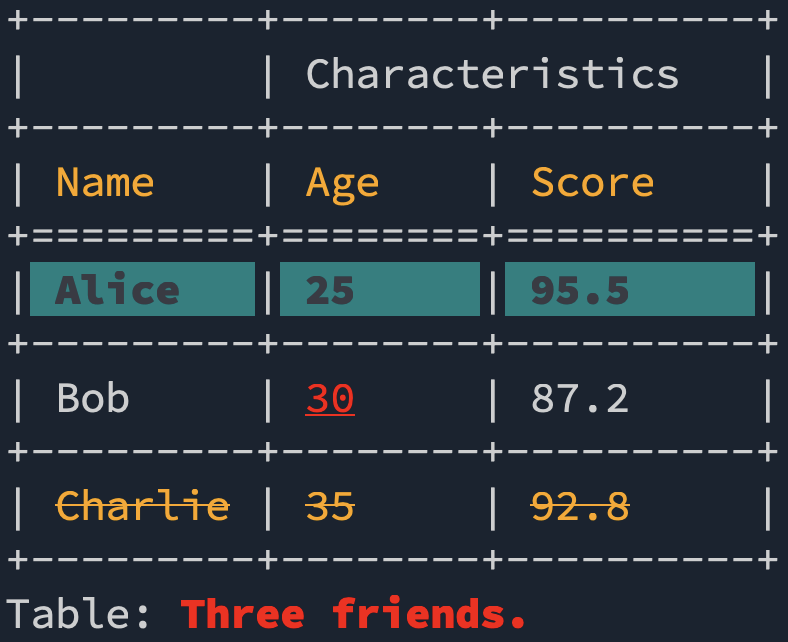

library(tinytable)
options(tinytable_tt_digits = 3)
options(tinytable_latex_placement = "H")
x <- mtcars[1:4, 1:5]Style
The main styling function for the tinytable package is style_tt(). Via this function, you can access three main interfaces to customize tables:
- A general interface to frequently used style choices which works for both HTML and LaTeX (PDF): colors, font style and size, row and column spans, etc. This is accessed through several distinct arguments in the
style_tt()function, such asitalic,color, etc. - A specialized interface which allows users to use the powerful
tabularraypackage to customize LaTeX tables. This is accessed by passingtabularraysettings as strings to theinnerandouterarguments oftheme_latex(). - A specialized interface which allows users to use the powerful
Bootstrapframework to customize HTML tables. This is accessed by passing CSS declarations and rules to thebootstrap_cssandbootstrap_css_rulearguments ofstyle_tt().
These functions can be used to customize rows, columns, or individual cells. They control many features, including:
- Text color
- Background color
- Widths
- Heights
- Alignment
- Text Wrapping
- Column and Row Spacing
- Cell Merging
- Multi-row or column spans
- Border Styling
- Font Styling: size, underline, italic, bold, strikethrough, etc.
- Header Customization
The style_*() functions can modify individual cells, or entire columns and rows. The portion of the table that is styled is determined by the i (rows) and j (columns) arguments.
Cells, rows, columns
To style individual cells, we use the style_cell() function. The first two arguments—i and j—identify the cells of interest, by row and column numbers respectively. To style a cell in the 2nd row and 3rd column, we can do:
tt(x) |>
style_tt(
i = 2,
j = 3,
background = "black",
color = "white"
)| mpg | cyl | disp | hp | drat |
|---|---|---|---|---|
| 21 | 6 | 160 | 110 | 3.9 |
| 21 | 6 | 160 | 110 | 3.9 |
| 22.8 | 4 | 108 | 93 | 3.85 |
| 21.4 | 6 | 258 | 110 | 3.08 |
The i and j accept vectors of integers to modify several cells at once:
tt(x) |>
style_tt(
i = 2:3,
j = c(1, 3, 4),
italic = TRUE,
color = "orange"
)| mpg | cyl | disp | hp | drat |
|---|---|---|---|---|
| 21 | 6 | 160 | 110 | 3.9 |
| 21 | 6 | 160 | 110 | 3.9 |
| 22.8 | 4 | 108 | 93 | 3.85 |
| 21.4 | 6 | 258 | 110 | 3.08 |
We can style all cells in a table by omitting both the i and j arguments:
tt(x) |> style_tt(color = "orange")| mpg | cyl | disp | hp | drat |
|---|---|---|---|---|
| 21 | 6 | 160 | 110 | 3.9 |
| 21 | 6 | 160 | 110 | 3.9 |
| 22.8 | 4 | 108 | 93 | 3.85 |
| 21.4 | 6 | 258 | 110 | 3.08 |
We can style entire rows by omitting the j argument:
tt(x) |> style_tt(i = 1:2, color = "orange")| mpg | cyl | disp | hp | drat |
|---|---|---|---|---|
| 21 | 6 | 160 | 110 | 3.9 |
| 21 | 6 | 160 | 110 | 3.9 |
| 22.8 | 4 | 108 | 93 | 3.85 |
| 21.4 | 6 | 258 | 110 | 3.08 |
We can style entire columns by omitting the i argument:
tt(x) |> style_tt(j = c(2, 4), bold = TRUE)| mpg | cyl | disp | hp | drat |
|---|---|---|---|---|
| 21 | 6 | 160 | 110 | 3.9 |
| 21 | 6 | 160 | 110 | 3.9 |
| 22.8 | 4 | 108 | 93 | 3.85 |
| 21.4 | 6 | 258 | 110 | 3.08 |
The j argument accepts integer vectors, character vectors, but also a string with a Perl-style regular expression, which makes it easier to select columns by name:
tt(x) |> style_tt(j = c("mpg", "drat"), color = "orange")| mpg | cyl | disp | hp | drat |
|---|---|---|---|---|
| 21 | 6 | 160 | 110 | 3.9 |
| 21 | 6 | 160 | 110 | 3.9 |
| 22.8 | 4 | 108 | 93 | 3.85 |
| 21.4 | 6 | 258 | 110 | 3.08 |
tt(x) |> style_tt(j = "mpg|drat", color = "orange")| mpg | cyl | disp | hp | drat |
|---|---|---|---|---|
| 21 | 6 | 160 | 110 | 3.9 |
| 21 | 6 | 160 | 110 | 3.9 |
| 22.8 | 4 | 108 | 93 | 3.85 |
| 21.4 | 6 | 258 | 110 | 3.08 |
Here we use a “negative lookahead” to exclude certain columns:
tt(x) |> style_tt(j = "^(?!drat|mpg)", color = "orange")| mpg | cyl | disp | hp | drat |
|---|---|---|---|---|
| 21 | 6 | 160 | 110 | 3.9 |
| 21 | 6 | 160 | 110 | 3.9 |
| 22.8 | 4 | 108 | 93 | 3.85 |
| 21.4 | 6 | 258 | 110 | 3.08 |
Of course, we can also call the style_tt() function several times to apply different styles to different parts of the table:
tt(x) |>
style_tt(i = 1, j = 1:2, color = "orange") |>
style_tt(i = 1, j = 3:4, color = "green")| mpg | cyl | disp | hp | drat |
|---|---|---|---|---|
| 21 | 6 | 160 | 110 | 3.9 |
| 21 | 6 | 160 | 110 | 3.9 |
| 22.8 | 4 | 108 | 93 | 3.85 |
| 21.4 | 6 | 258 | 110 | 3.08 |
The i argument also accepts unquoted expressions for non-standard evaluation. This allows us to style rows based on data conditions:
tt(x) |>
style_tt(i = mpg > 21, background = "lightblue", bold = TRUE)| mpg | cyl | disp | hp | drat |
|---|---|---|---|---|
| 21 | 6 | 160 | 110 | 3.9 |
| 21 | 6 | 160 | 110 | 3.9 |
| 22.8 | 4 | 108 | 93 | 3.85 |
| 21.4 | 6 | 258 | 110 | 3.08 |
There is also a groupi object with indices that can be manipulated as an unquoted numeric expression.
tt(head(mtcars, 10)) |>
group_tt(i = list("Hello" = 3, "World" = 5)) |>
group_tt(j = list("Cyl" = 1:3, "Disp" = 4:6)) |>
style_tt(groupi, background = "pink", align = "c") |>
style_tt(groupi + 1, color = "white", background = "teal")| Cyl | Disp | |||||||||
|---|---|---|---|---|---|---|---|---|---|---|
| mpg | cyl | disp | hp | drat | wt | qsec | vs | am | gear | carb |
| 21 | 6 | 160 | 110 | 3.9 | 2.62 | 16.5 | 0 | 1 | 4 | 4 |
| 21 | 6 | 160 | 110 | 3.9 | 2.88 | 17 | 0 | 1 | 4 | 4 |
| Hello | Hello | Hello | Hello | Hello | Hello | Hello | Hello | Hello | Hello | Hello |
| 22.8 | 4 | 108 | 93 | 3.85 | 2.32 | 18.6 | 1 | 1 | 4 | 1 |
| 21.4 | 6 | 258 | 110 | 3.08 | 3.21 | 19.4 | 1 | 0 | 3 | 1 |
| World | World | World | World | World | World | World | World | World | World | World |
| 18.7 | 8 | 360 | 175 | 3.15 | 3.44 | 17 | 0 | 0 | 3 | 2 |
| 18.1 | 6 | 225 | 105 | 2.76 | 3.46 | 20.2 | 1 | 0 | 3 | 1 |
| 14.3 | 8 | 360 | 245 | 3.21 | 3.57 | 15.8 | 0 | 0 | 3 | 4 |
| 24.4 | 4 | 147 | 62 | 3.69 | 3.19 | 20 | 1 | 0 | 4 | 2 |
| 22.8 | 4 | 141 | 95 | 3.92 | 3.15 | 22.9 | 1 | 0 | 4 | 2 |
| 19.2 | 6 | 168 | 123 | 3.92 | 3.44 | 18.3 | 1 | 0 | 4 | 4 |
Colors
The color and background arguments in the style_tt() function are used for specifying the text color and the background color for cells of a table created by the tt() function. This argument plays a crucial role in enhancing the visual appeal and readability of the table, whether it’s rendered in LaTeX or HTML format. The way we specify colors differs slightly between the two formats:
For HTML Output:
- Hex Codes: You can specify colors using hexadecimal codes, which consist of a
#followed by 6 characters (e.g.,#CC79A7). This allows for a wide range of colors. - Keywords: There’s also the option to use color keywords for convenience. The supported keywords are basic color names like
black,red,blue, etc.
For LaTeX Output:
- Hexadecimal Codes: Similar to HTML, you can use hexadecimal codes.
- Keywords: LaTeX supports a different set of color keywords, which include standard colors like
black,red,blue, as well as additional ones likecyan,darkgray,lightgray, etc. - Color Blending: An advanced feature in LaTeX is color blending, which can be achieved using the
xcolorpackage. You can blend colors by specifying ratios (e.g.,white!80!blueorgreen!20!red). - Luminance Levels: The
ninecolorspackage in LaTeX offers colors with predefined luminance levels, allowing for more nuanced color choices (e.g., “azure4”, “magenta8”).
Note that the keywords used in LaTeX and HTML are slightly different.
tt(x) |> style_tt(i = 1:4, j = 1, color = "#FF5733")| mpg | cyl | disp | hp | drat |
|---|---|---|---|---|
| 21 | 6 | 160 | 110 | 3.9 |
| 21 | 6 | 160 | 110 | 3.9 |
| 22.8 | 4 | 108 | 93 | 3.85 |
| 21.4 | 6 | 258 | 110 | 3.08 |
Note that when using Hex codes in a LaTeX table, we need extra declarations in the LaTeX preamble. See ?tt for details.
Alignment
To align columns, we use a single character, or a string where each letter represents a column:
dat <- data.frame(
a = c("a", "aaa", "aaaaa"),
b = c("b", "bbb", "bbbbb"),
c = c("c", "ccc", "ccccc")
)
tt(dat) |> style_tt(j = 1:3, align = "c")| a | b | c |
|---|---|---|
| a | b | c |
| aaa | bbb | ccc |
| aaaaa | bbbbb | ccccc |
tt(dat) |> style_tt(j = 1:3, align = "lcr")| a | b | c |
|---|---|---|
| a | b | c |
| aaa | bbb | ccc |
| aaaaa | bbbbb | ccccc |
In LaTeX documents (only), we can use decimal-alignment:
z <- data.frame(pi = c(pi * 100, pi * 1000, pi * 10000, pi * 100000))
tt(z) |>
format_tt(j = 1, digits = 8, num_fmt = "significant_cell") |>
style_tt(j = 1, align = "d")| pi |
|---|
| 314.15927 |
| 3141.5927 |
| 31415.927 |
| 314159.27 |
Font size
The font size is specified in em units.
tt(x) |> style_tt(i = 1:4, j = "mpg|hp|qsec", fontsize = 1.5)| mpg | cyl | disp | hp | drat |
|---|---|---|---|---|
| 21 | 6 | 160 | 110 | 3.9 |
| 21 | 6 | 160 | 110 | 3.9 |
| 22.8 | 4 | 108 | 93 | 3.85 |
| 21.4 | 6 | 258 | 110 | 3.08 |
Spanning cells (merging cells)
Sometimes, it can be useful to make a cell stretch across multiple colums or rows, for example when we want to insert a label. To achieve this, we can use the colspan argument. Here, we make the 2nd cell of the 2nd row stretch across three columns and two rows:
tt(x) |> style_tt(
i = 2, j = 2,
colspan = 3,
rowspan = 2,
align = "c",
alignv = "m",
color = "white",
background = "black",
bold = TRUE
)| mpg | cyl | disp | hp | drat |
|---|---|---|---|---|
| 21 | 6 | 160 | 110 | 3.9 |
| 21 | 6 | 160 | 110 | 3.9 |
| 22.8 | 4 | 108 | 93 | 3.85 |
| 21.4 | 6 | 258 | 110 | 3.08 |
Here is the original table for comparison:
tt(x)| mpg | cyl | disp | hp | drat |
|---|---|---|---|---|
| 21 | 6 | 160 | 110 | 3.9 |
| 21 | 6 | 160 | 110 | 3.9 |
| 22.8 | 4 | 108 | 93 | 3.85 |
| 21.4 | 6 | 258 | 110 | 3.08 |
Spanning cells can be particularly useful when we want to suppress redundant labels:
tab <- aggregate(mpg ~ cyl + am, FUN = mean, data = mtcars)
tab <- tab[order(tab$cyl, tab$am), ]
tab cyl am mpg
1 4 0 22.90000
4 4 1 28.07500
2 6 0 19.12500
5 6 1 20.56667
3 8 0 15.05000
6 8 1 15.40000tt(tab, digits = 2) |>
style_tt(i = c(1, 3, 5), j = 1, rowspan = 2, alignv = "t")| cyl | am | mpg |
|---|---|---|
| 4 | 0 | 23 |
| 4 | 1 | 28 |
| 6 | 0 | 19 |
| 6 | 1 | 21 |
| 8 | 0 | 15 |
| 8 | 1 | 15 |
The rowspan feature is also useful to create multi-row labels. For example, in this table there is a linebreak, but all the text fits in a single cell:
tab <- data.frame(Letters = c("A<br>B", ""), Numbers = c("First", "Second"))
tt(tab) |>
theme_html(class = "table-bordered")| Letters | Numbers |
|---|---|
| A B |
First |
| Second |
Now, we use colspan to ensure that that cells in the first column take up less space and are combined into one:
tt(tab) |>
theme_html(class = "table-bordered") |>
style_tt(1, 1, rowspan = 2)| Letters | Numbers |
|---|---|
| A B |
First |
| Second |
We can combine several spans to create complex tables like this one:
df <- structure(list(
Col1 = c("Col Header", "Item 0", "Item 1", "Item 2", "Total"),
Col2 = c("Span 1", "X", "xx", "xx", "xxxx"),
Col2.1 = c("Span 1", "Y", "xx", "xx", "xxxx"),
Col2.2 = c("Span 2", "X", "xx", "xx", "xxxx"),
Col2.3 = c("Span 2", "Y", "xx", "xx", "xxxx")),
class = "data.frame", row.names = c(NA, -5L))
df |>
setNames(NULL) |>
tt() |>
style_tt(1, 1, rowspan = 2, bold = TRUE) |>
style_tt(1, c(2, 4), colspan = 2, bold = TRUE) |>
style_tt(5, c(2, 4), colspan = 2) |>
theme_grid()| Col Header | Span 1 | Span 1 | Span 2 | Span 2 |
| Item 0 | X | Y | X | Y |
| Item 1 | xx | xx | xx | xx |
| Item 2 | xx | xx | xx | xx |
| Total | xxxx | xxxx | xxxx | xxxx |
Headers
The header can be omitted from the table by using the colnames argument.
tt(x, colnames = FALSE)| 21 | 6 | 160 | 110 | 3.9 |
| 21 | 6 | 160 | 110 | 3.9 |
| 22.8 | 4 | 108 | 93 | 3.85 |
| 21.4 | 6 | 258 | 110 | 3.08 |
The first is row 0, and higher level headers (ex: column spanning labels) have negative indices like -1. They can be styled as expected:
tt(x) |> style_tt(i = 0, color = "white", background = "black")| mpg | cyl | disp | hp | drat |
|---|---|---|---|---|
| 21 | 6 | 160 | 110 | 3.9 |
| 21 | 6 | 160 | 110 | 3.9 |
| 22.8 | 4 | 108 | 93 | 3.85 |
| 21.4 | 6 | 258 | 110 | 3.08 |
When styling columns without specifying i, the headers are styled in accordance with the rest of the column:
tt(x) |> style_tt(j = 2:3, color = "white", background = "black")| mpg | cyl | disp | hp | drat |
|---|---|---|---|---|
| 21 | 6 | 160 | 110 | 3.9 |
| 21 | 6 | 160 | 110 | 3.9 |
| 22.8 | 4 | 108 | 93 | 3.85 |
| 21.4 | 6 | 258 | 110 | 3.08 |
Conditional styling
We can use the standard which function from Base R to create indices and apply conditional stying on rows. And we can use a regular expression in j to apply conditional styling on columns:
k <- mtcars[1:10, c("mpg", "am", "vs")]
tt(k) |>
style_tt(
i = which(k$am == k$vs),
j = "am|vs",
background = "teal",
color = "white"
)| mpg | am | vs |
|---|---|---|
| 21 | 1 | 0 |
| 21 | 1 | 0 |
| 22.8 | 1 | 1 |
| 21.4 | 0 | 1 |
| 18.7 | 0 | 0 |
| 18.1 | 0 | 1 |
| 14.3 | 0 | 0 |
| 24.4 | 0 | 1 |
| 22.8 | 0 | 1 |
| 19.2 | 0 | 1 |
We can also use non-standard evaluation to apply conditional styling directly with unquoted expressions:
tt(k) |>
style_tt(i = mpg > 22, background = "lightgreen", bold = TRUE)| mpg | am | vs |
|---|---|---|
| 21 | 1 | 0 |
| 21 | 1 | 0 |
| 22.8 | 1 | 1 |
| 21.4 | 0 | 1 |
| 18.7 | 0 | 0 |
| 18.1 | 0 | 1 |
| 14.3 | 0 | 0 |
| 24.4 | 0 | 1 |
| 22.8 | 0 | 1 |
| 19.2 | 0 | 1 |
Users can also supply a logical matrix of the same size as x to indicate which cell should be styled. For example, we can change the colors of certain entries in a correlation matrix as follows:
cormat <- data.frame(cor(mtcars[1:5]))
tt(cormat, digits = 2) |>
style_tt(i = abs(cormat) > .8, background = "black", color = "white")| mpg | cyl | disp | hp | drat |
|---|---|---|---|---|
| 1 | -0.85 | -0.85 | -0.78 | 0.68 |
| -0.85 | 1 | 0.9 | 0.83 | -0.7 |
| -0.85 | 0.9 | 1 | 0.79 | -0.71 |
| -0.78 | 0.83 | 0.79 | 1 | -0.45 |
| 0.68 | -0.7 | -0.71 | -0.45 | 1 |
Vectorized styling (heatmaps)
The color, background, and fontsize arguments are vectorized. This allows easy specification of different colors in a single call:
tt(x) |>
style_tt(
i = 1:4,
color = c("red", "blue", "green", "orange")
)| mpg | cyl | disp | hp | drat |
|---|---|---|---|---|
| 21 | 6 | 160 | 110 | 3.9 |
| 21 | 6 | 160 | 110 | 3.9 |
| 22.8 | 4 | 108 | 93 | 3.85 |
| 21.4 | 6 | 258 | 110 | 3.08 |
When using a single value for a vectorized argument, it gets applied to all values:
tt(x) |>
style_tt(
j = 2:3,
color = c("orange", "green"),
background = "black"
)| mpg | cyl | disp | hp | drat |
|---|---|---|---|---|
| 21 | 6 | 160 | 110 | 3.9 |
| 21 | 6 | 160 | 110 | 3.9 |
| 22.8 | 4 | 108 | 93 | 3.85 |
| 21.4 | 6 | 258 | 110 | 3.08 |
We can also produce more complex heatmap-like tables to illustrate different font sizes in em units:
# font sizes
fs <- seq(.1, 2, length.out = 20)
# headless table
k <- data.frame(matrix(fs, ncol = 5))
# colors
bg <- hcl.colors(20, "Inferno")
fg <- ifelse(as.matrix(k) < 1.7, tail(bg, 1), head(bg, 1))
# table
tt(k, width = .7, theme = "empty", colnames = FALSE) |>
style_tt(j = 1:5, align = "ccccc", alignv = "m") |>
style_tt(
i = 1:4,
j = 1:5,
color = fg,
background = bg,
fontsize = fs
)| 0.1 | 0.5 | 0.9 | 1.3 | 1.7 |
| 0.2 | 0.6 | 1 | 1.4 | 1.8 |
| 0.3 | 0.7 | 1.1 | 1.5 | 1.9 |
| 0.4 | 0.8 | 1.2 | 1.6 | 2 |
Lines (borders)
The style_tt function allows us to customize the borders that surround eacell of a table, as well horizontal and vertical rules. To control these lines, we use the line, line_width, and line_color arguments. Here’s a brief overview of each of these arguments:
line: This argument specifies where solid lines should be drawn. It is a string that can consist of the following characters:"t": Draw a line at the top of the cell, row, or column."b": Draw a line at the bottom of the cell, row, or column."l": Draw a line at the left side of the cell, row, or column."r": Draw a line at the right side of the cell, row, or column.- You can combine these characters to draw lines on multiple sides, such as
"tbl"to draw lines at the top, bottom, and left sides of a cell.
line_width: This argument controls the width of the solid lines in em units (default: 0.1 em). You can adjust this value to make the lines thicker or thinner.line_color: Specifies the color of the solid lines. You can use color names, hexadecimal codes, or other color specifications to define the line color.
Here is an example where we draw lines around every border (“t”, “b”, “l”, and “r”) of specified cells.
tt(x, theme = "empty") |>
style_tt(
i = 0:3,
j = 1:3,
line = "tblr",
line_width = 0.4,
line_color = "orange"
)| mpg | cyl | disp | hp | drat |
|---|---|---|---|---|
| 21 | 6 | 160 | 110 | 3.9 |
| 21 | 6 | 160 | 110 | 3.9 |
| 22.8 | 4 | 108 | 93 | 3.85 |
| 21.4 | 6 | 258 | 110 | 3.08 |
And here is an example with horizontal rules:
tt(x, theme = "empty") |>
style_tt(i = 0, line = "t", line_color = "orange", line_width = 0.4) |>
style_tt(i = 1, line = "t", line_color = "purple", line_width = 0.2) |>
style_tt(i = 4, line = "b", line_color = "orange", line_width = 0.4)| mpg | cyl | disp | hp | drat |
|---|---|---|---|---|
| 21 | 6 | 160 | 110 | 3.9 |
| 21 | 6 | 160 | 110 | 3.9 |
| 22.8 | 4 | 108 | 93 | 3.85 |
| 21.4 | 6 | 258 | 110 | 3.08 |
dat <- data.frame(1:2, 3:4, 5:6, 7:8)
tt(dat, theme = "empty", colnames = FALSE) |>
style_tt(
line = "tblr", line_color = "white", line_width = 0.5,
background = "blue", color = "white"
)| 1 | 3 | 5 | 7 |
| 2 | 4 | 6 | 8 |
Markdown
Markdown is a text-only format with limited styling options. The only supported arguments are: bold, italic, and strikeout. These limitations exist because there is no standard markdown syntax for other styling options (ex: colors and background).
However, in terminals (consoles) that support it, tinytable can display colors and text styles using ANSI escape codes by setting theme_markdown(ansi = TRUE). This allows for rich formatting in compatible terminal environments.
Here’s an example with multiple ANSI styles:
data <- data.frame(
Name = c("Alice", "Bob", "Charlie"),
Age = c(25, 30, 35),
Score = c(95.5, 87.2, 92.8)
)
tt(data, caption = "Three friends.") |>
style_tt(i = c(0, 3), color = "orange") |>
style_tt(i = 1, background = "teal", color = "black", bold = TRUE) |>
style_tt(i = 2, j = 2, underline = TRUE, color = "red") |>
style_tt(i = 3, strikeout = TRUE) |>
group_tt(j = list("Characteristics" = 2:3)) |>
style_tt(i = "caption", bold = TRUE, color = "red") |>
theme_markdown(ansi = TRUE)